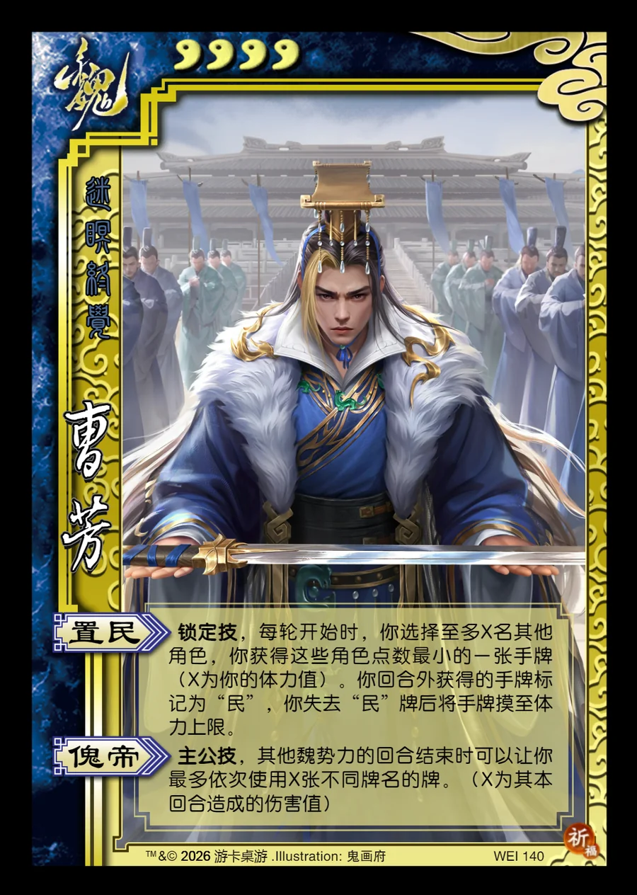

点击卡面查看大图
魏
曹芳
♥4迷瞑终觉
置民锁定技
锁定技，每轮开始时，你选择至多X名其他角色，你获得这些角色点数最小的一张手牌（X为你的体力值）。你回合外获得的手牌标记为“民”，你失去“民”牌后将手牌摸至体力上限。
傀帝主公技
主公技，其他魏势力的回合结束时可以让你最多依次使用X张不同牌名的牌。（X为其本回合造成的伤害值）

点击卡面查看大图
迷瞑终觉
锁定技，每轮开始时，你选择至多X名其他角色，你获得这些角色点数最小的一张手牌（X为你的体力值）。你回合外获得的手牌标记为“民”，你失去“民”牌后将手牌摸至体力上限。
主公技，其他魏势力的回合结束时可以让你最多依次使用X张不同牌名的牌。（X为其本回合造成的伤害值）